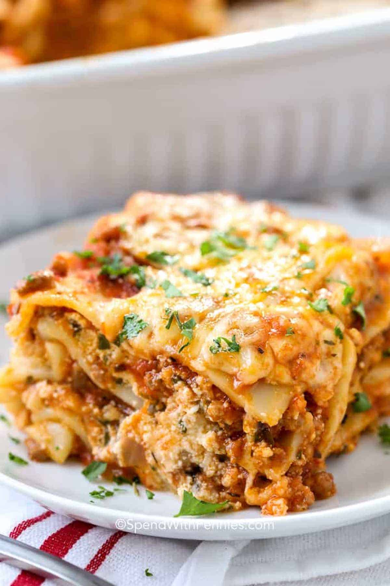

Lasagna

Description
Homemade lasagna may have a few steps, but each step is easy – and I assure you it’s worth the time; the perfect Italian meal! This is a really easy lasagna recipe.
Ingredients
- 12 Lasagna Noodles
- 1/2 Pound Lean Ground Beef
- 1 Onion
- 36 Ounces Tomato Sauce
- 2 Cloves Garlic Minced
- 1 Teaspoon Italian Seasoning
- 2 Cups Ricotta Cheese
- 1 Egg Beaten
Steps
- Preheat oven to 350
- In a large bot of boiling water, add the lasgna noodles and cook for 9 minutes
- In a skillet, brown the lean ground beef, onion, and garlic over medium heat
- Stir in the pasta sauce and Italian seasoning
- Combine the cheese and egg
- Layer noodles with the filling and then top with the cheese
- Bake for 45 minutes